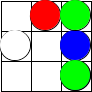

Rubric: Milestone B
Grading: all staff
total: 40 points |
GOAL TAs practice output and code inspection. Cameron sets them up.
Delivery – Cameron
delivery: 10 points |
5 points for xgui in B
5 points for xgui, executable possibly after running make
Test Fest – Cameron
$ ./xtest Tests/ ./xgui |
test-fest: 10 points |
– 10 points, for passing my test suite
If it tries to pop up a window, the pair loses all points for the test fest.
If it doesn’t create the file the-image.png, the pair loses all points for the test fest.
If it does produce the files, the test harness must copy them into the pair’s grading repo so that the TAs can inspect them.
Inspecting the Output – everyone
output-inspection: 10 points |
– 10 points, TAs ensure that each pair’s image (in the-image.png) looks roughly like the following

because the input is
{"color":"red","x":1,"y":0} |
{"color":"white","x":0,"y":1} |
{"color":"blue","x":2,"y":1} |
{"color":"blue","x":2,"y":2} |
{"color":"green","x":2,"y":2} |
{"color":"green","x":2,"y":0} |
Inspecting the Code – everyone
code-inspection: 10 points |
– 10 points, TAs inspect the xgui code for the following points:
- The problem statement states two tasks:
read an arbitrarily long series of JSON objects from STDIN
turn each JSON array into a drawing and save it as PNG
The first bullet requires a “while” loop function.
The second bullet should be factored out.
All points if the program consists of (at least two) separate functions to cover these cases.